简单定义：一些相互连接的、自治的计算机的集合
文献定义：计算机网络用通信设备和线路将分散在不同地点的有独立功能的多个计算机系统相互连接起来，并按照网络协议进行数据通信，实现资源共享的计算机集合
多个计算机 + 通信子网 + 一系列协议
世界范围的计算机网络
互联全世界数以亿计的计算设备
全球性网络的网络
计算设备：路由器、手机、移动设备、服务器、工作站等等
称为：主机、端系统
主要功能：进行数据处理，运行网络应用程序
通信链路和分组交换机
主要功能：保证高效可靠的数据传输
把端系统连接到一起的物理线路
类型多种：同轴电缆、双绞线、光纤、无线电等，不同链路传输速率不同
链路传输速率：每秒传输多少位数据 bit/s
分组交换机：连接端系统的中间交换设备，用于接收和转发分组，从一条通信链路接收分组、保存，转发至另外一条通信链路（采用分组交换技术）；
分组交换packet switching技术：发送端将要发送的数据分成若干较小的块，添加首部形成分组（包packet），分别发送至目的端，再组装恢复成原数据
路径route/path：一个分组从发送端系统传输到接收端系统，所经过的一系列通信链路和分组交换机，可共享，不专用
一个由多个分组交换机和多段通信链路组成的网络
端系统通过ISP接入因特网
不同ISP提供不同类型网络接入
低层次的ISP通过高层ISP互联
每个ISP独立管理，运行ISP协议
控制网络中信息接受和发送的一组软件
因特网协议：TCP/IP协议（传输控制协议/网络协议）
因特网标准：由IETF制定的标准文档RFC
专用的内部网络：若政府、公司网络
专网内主机不能随意与外部主机交换信息，由防火墙控制
分布式应用程序：在端系统上运行，彼此可以通信
面向连接的可靠服务：确保从发送方发出的数据最终按顺序完整的交付给接收方
无连接的不可靠的服务：不能对最终交付做任何保证
两者都不能确定数据接收的所需时间
定义：定义了在两个或多个通信实体之交换的报文格式和顺序，以及报文发送或接收一条报文或其他时间所采取的动作
网络协议：由某些设备的硬件或软件执行
外围部件，主机，网络应用
与因特网相连的计算机，运行各种应用程序
客户机client：桌面和移动PC
服务器server：功能更强的机器，邮件服务器，web服务器
分布式应用程序，客户机程序和服务器程序在端系统分布式运行
分客户端和服务器
通过因特网互相发送报文进行交互
路由器、链路、其他部件成为“黑盒子”
最小限度使用专用服务器，
端系统中运行的对等应用程序同时起客户机和服务器程序的双重作用
端系统通过服务传输报文，进行通信
采取TCP（传输控制协议）协议
两个端系统交换数据，要先通过“握手过程”建立连接，然后才发送实际数据
握手过程：互相发送“控制”分组，使双方做好接收后面数据分组的准备，即在两个端系统之间创建连接
特性：
采取UDP（用户数据报协议）协议
两个端系统交换数据时，不需要握手，直接发送分组，数据传递更快
特性：
网络核心位于网络内部，连接端系统的分组交换机和链路形成的网状网络
通信双方必须先建立一个专用的连接（电路），一直维持，直到通信结束
例：电路交换网络：每个链路可有n条电路，能够支持n条同步连接，可共享，每条连接获得1/n的带宽
在一条传输链路上同时建立多条连接，分别传输数据
频分多路复用FDM：链路的频谱由跨越链路创建的连接所共享，按频率划分为若干频段，每个频段专用于一个连接，带宽指代频段的宽度。
时分多路复用TDM：时间划分为固定区间的帧，每帧再划分为固定数量的时隙，每一个时隙专用于一个连接，周期性的通信
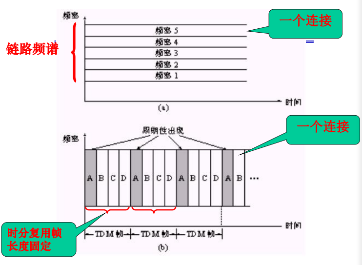
效率较低：静默期（无数据传输）专用电路空闲，网络资源被浪费
创建端到端的电路及预留端到端带宽的过程复杂
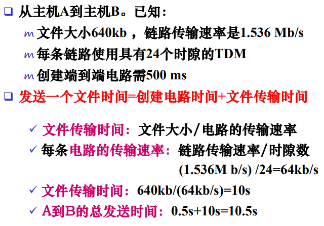
分组以链路的最大传输速率传输
传输过程采用存储转发传输机制
分组交换机先将输入端的整个分组接收下来（存储），再从输出链路转发传输出去（转发）
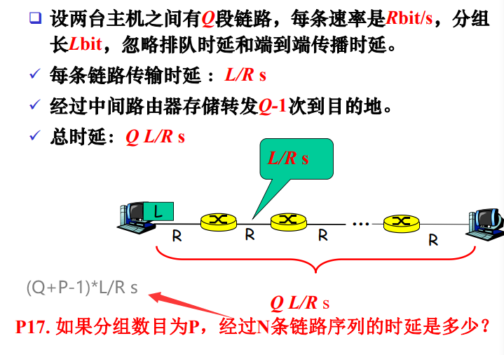
将要发送的整个信息作为一个报文发送
采用存储转发技术：整个报文先传送到相邻结点，全部保存下来后，再转发至下一个结点
和分组交换类似，只不过一次传送整个报文，包含多个分组
前两者对比：
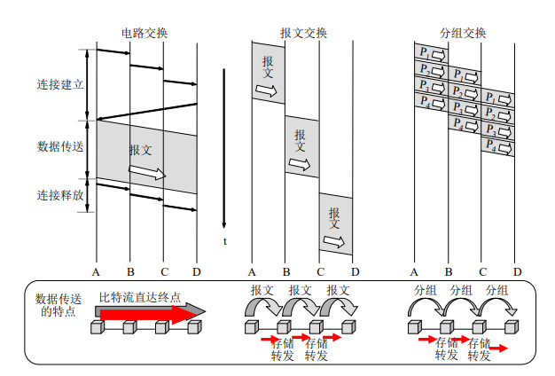
在源和目的主机之间通过一系列分组交换机转发分组
交换机根据虚电路号转发分组
两个主机建立虚连接-----每个虚电路指定一个标识符ID-----分组带有标识符，转发路径
交换机根据目的地址（IP地址和端口号）转发分组
不需要建立连接-----分组带有目的地址，转发路径
接入网（network access）：将端系统连接到边缘路由器的物理链路，使用户连接到网络的基础设施
边缘路由器（edge router）：端系统到任何其他远程端系统地路径上地第一台路由器
解决问题：端系统怎样连接到边缘路由器
将家庭端系统与边缘路由器连接
通过普通模拟电话线用拨号调制解调器相连
调制：将数字信号转换为模拟信号
解调：将模拟信号转化为数字信号
模拟信号：连续变化地电磁波，传输的是模拟信号，显示的是数字信号
数字信号：一系列电压脉冲
网络接入是沿着一条点对点拨号电话线的一对调制解调器
缺点：速率低，不能同时做事情
更高的数据传输率，可以同时上网和打电话
方式：数字用户线DSL、混合光纤同轴电缆HFC、光纤到户
通过局域网LAN连接端用户和边缘路由器
先将多个端系统连接成局域网，然后局域网在于边缘路由器连接
用于无线移动设备的接入
有：无线局域网、广域无线接入网
无线局域网：用户连接基站，基站连接有线因特网，基站之间互相通信
广域无线接入网：基站由电信提供商管理，覆盖范围广，4G\5G
将网络中不同端系统相互连接起来的物理线路，是进行数据传输的物理通路，通过传播电磁波或光脉冲来发送比特流，也称传输媒体，传输介质
两类：
引导型媒体：电波沿固体媒体传播，双绞线、同轴电缆、光缆等
非引导性媒体：电波在空气中或外层空间传播，无线电等
物理媒体的性能对网络的通信、速度、距离、价格以及网络中的结点数和可靠性都有很大影响。
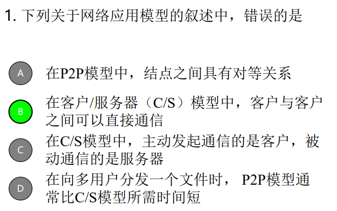
端系统经过一个接入网与因特网相连
因特网体系结构：因特网边缘的接入网络通过分层的ISP与因特网其他部分相连
时延和丢包怎样出现？
分组在每个路由器中先存储，再转发
分组传输：从源主机出发，通过一系列路由器传输，最终到达目的主机
检查比特差错
决定输出链路
分组等待在链路上传输的排队时间
相关因素：等待的分组数量，到达分组数量，到达队列流量强度（比特达到速率/推出速率）和性质
毫秒至微秒级
或存储转发时延
将分组的所有比特推向链路的所需要的时间
L/R：分组长度（bit）/链路传输速率(bps)
一个比特从链路的起点到下一个节点传播所需要的时间
以链路传播速率s传播：信号在线路上单位时间内传送的距离
2 * 108m/s - 3 * 108m/s
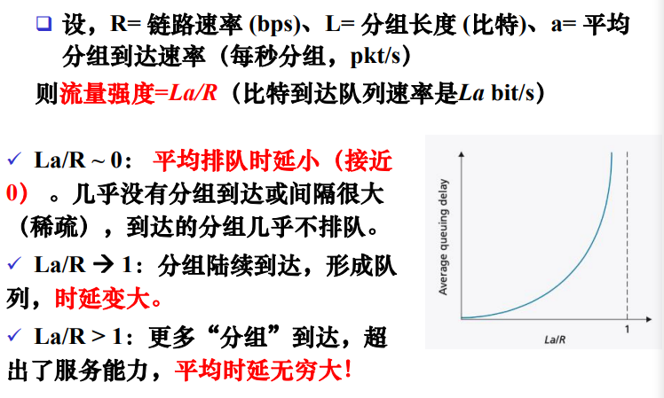
路由器和源主机都有处理时延dproc
链路传播时延dprop
路由器和源主机输出时延dtrans = L/R
如果网络没有拥塞，那么就可以忽略排队时延
网络的分层结构及其各层协议的集合，是对网络及其组成部分功能的精确定义。
每层功能独立、相邻两层有逻辑接口，可以交换信息、上层调用下层服务，下层为上层提供服务
使复杂系统简化:
易于维护、系统的更新
协议:控制网络中信息的发送和接收。
协议分层:
有些功能可能在不同层重复出现:
某层的功能可能需要仅存在其他某层的信息。
主机(端系统)间数据传送实际上并不是在对等层间直接进行，而是通过相邻层间的传递合作完成。
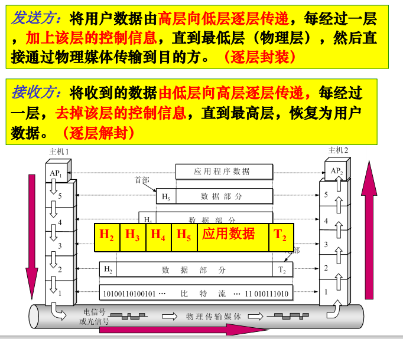
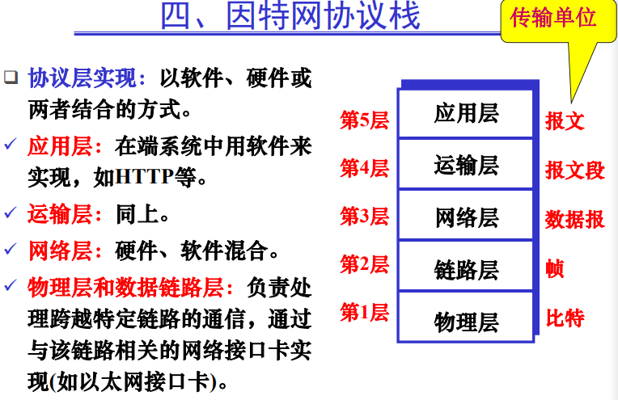
应用层:提供各种网络应用。传输应用报文。
运输层:在应用程序的客户机和服务器之间提供传输应用层报文服务。传输报文段。
网络层:主机和主机之间传输网络层分组（数据报)。
链路层:在邻近单元之间传输数据（帧)。
物理层:在节点之间传输比特流。
之前的协议OSI是七层，还有表示层和会话层，如图：
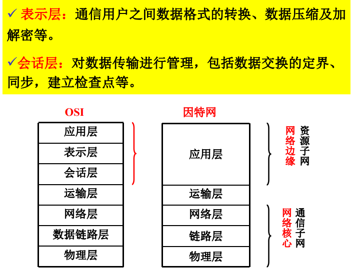
与端系统类似，路由器和链路层交换机以分层方式组织网络硬件和软件，通常只实现低几层。
由高层向低层逐层传递(封装)
应用层报文M传递到运输层，附加上运输层首部信息Ht(运输层报文段)
报文段传递到网络层，附加上网络层首部信息Hn(网络层数据报)
每层传递的数据分为首部字段和有效载荷字段两部分。
有效载荷是相邻上层传下来的数据。
由低层向高层逐层传递(解封)
物理层接收，并将其沿协议栈逐层向上传递，每层去除对应的首部，恢复原报文。
如果报文很长，传输时,可先分成多个报文段,每个报文段在网络层再分成多个数据报。
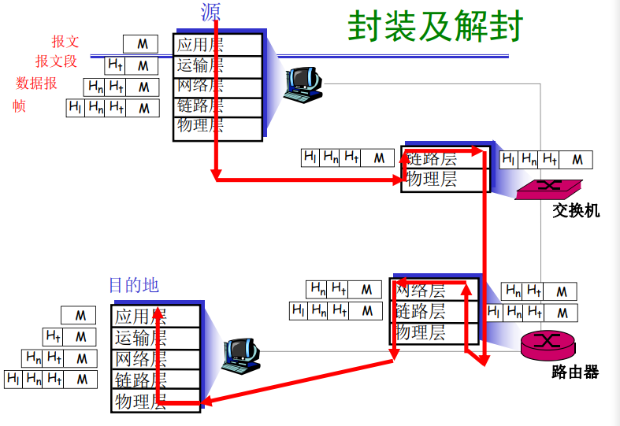
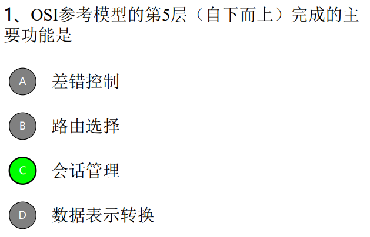
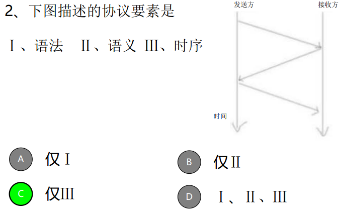
计算机网络是计算机技术与通信技术相结合的产物。
第一个分组交换计算机网络：美国国防部高级研究计划局(Advanced ResearchProjects Agency)的研制的ARPAnet
由此产生两个概念：（即计算机网络的逻辑组成）
通信子网:由结点交换机、通信线路及设备组成。(网络核心)。
资源子网:网络外围，包括主机、终端、软件等。(网络边缘)